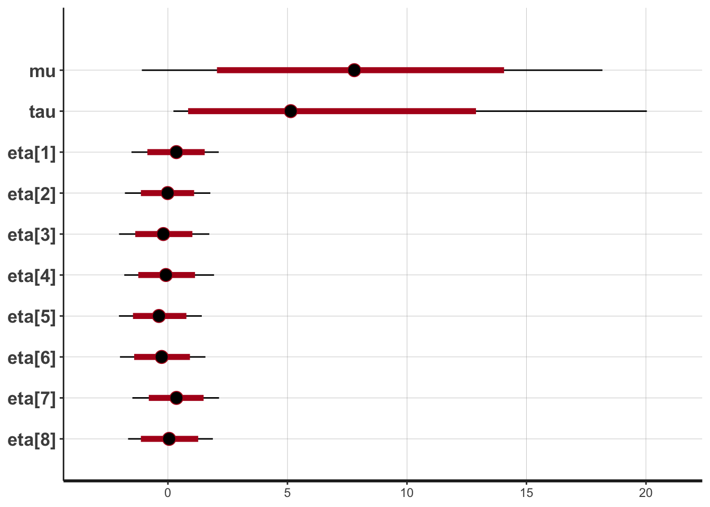
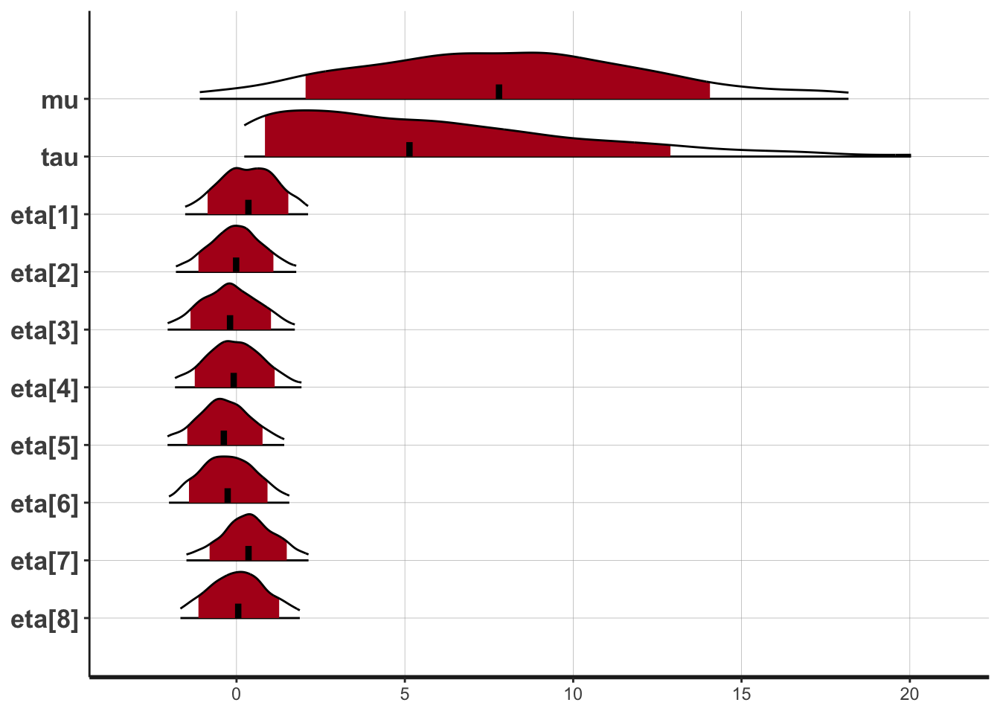
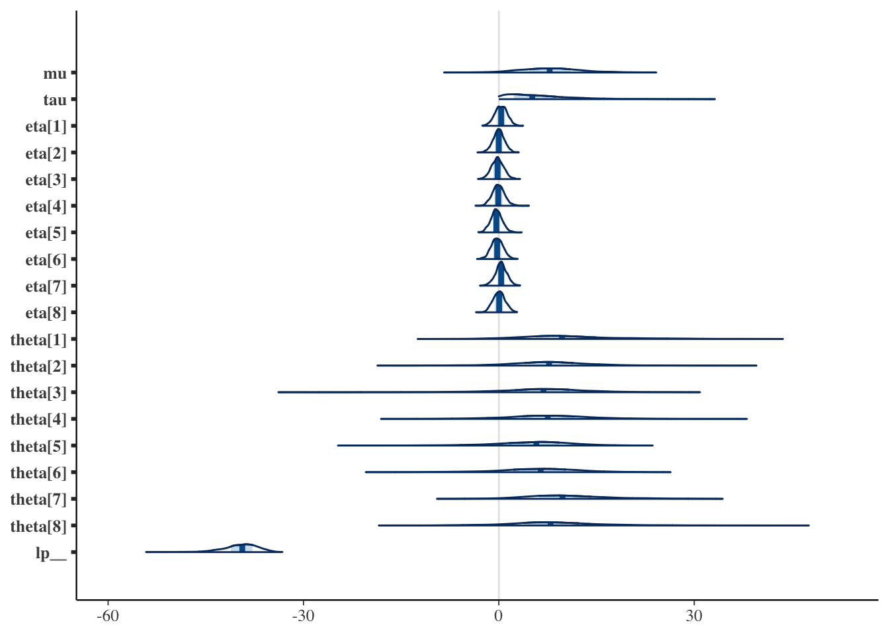
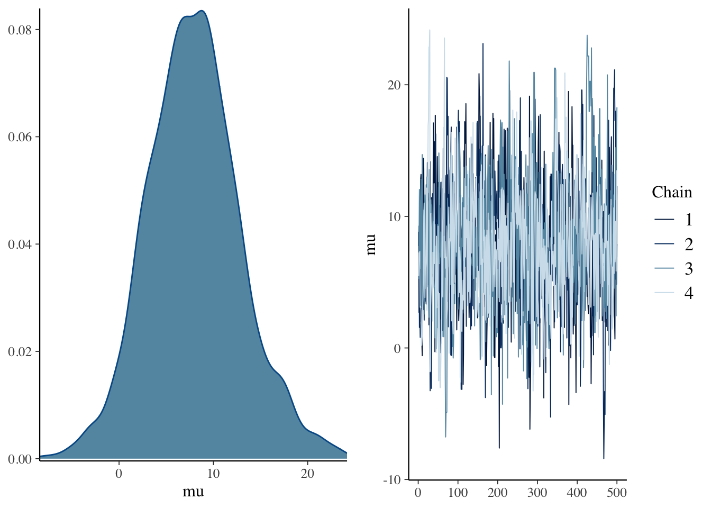
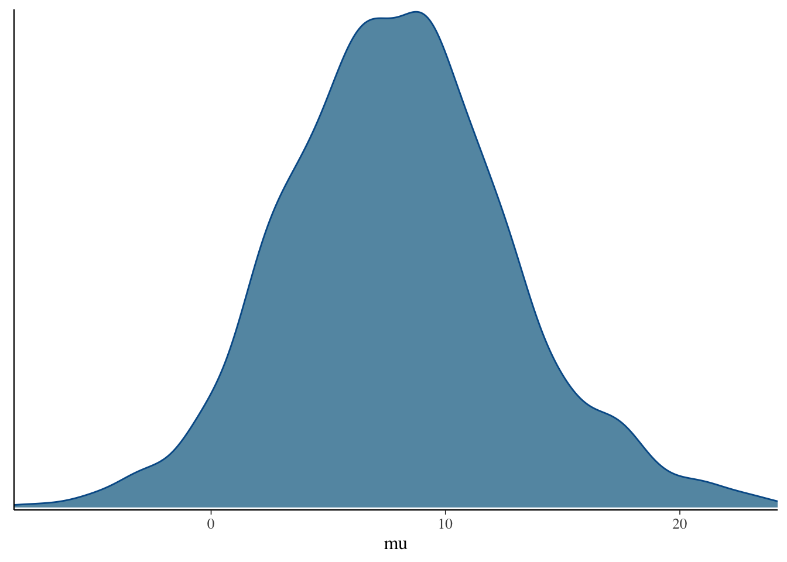
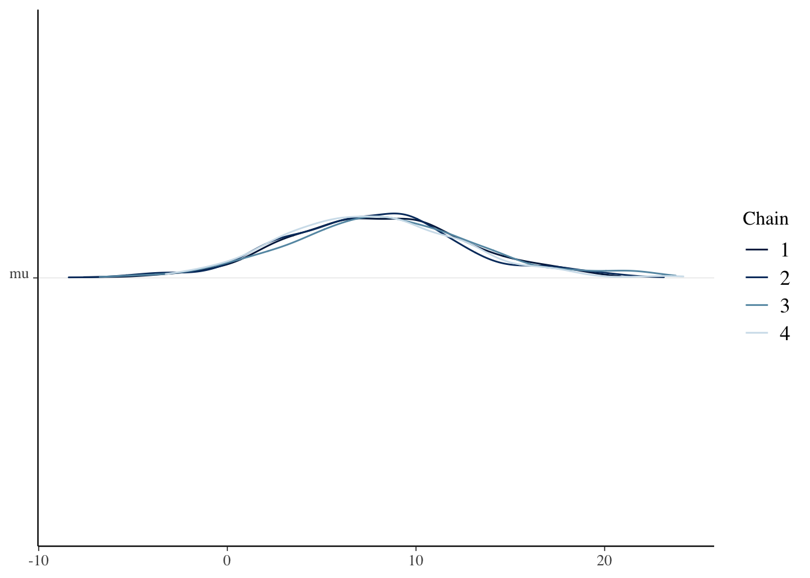
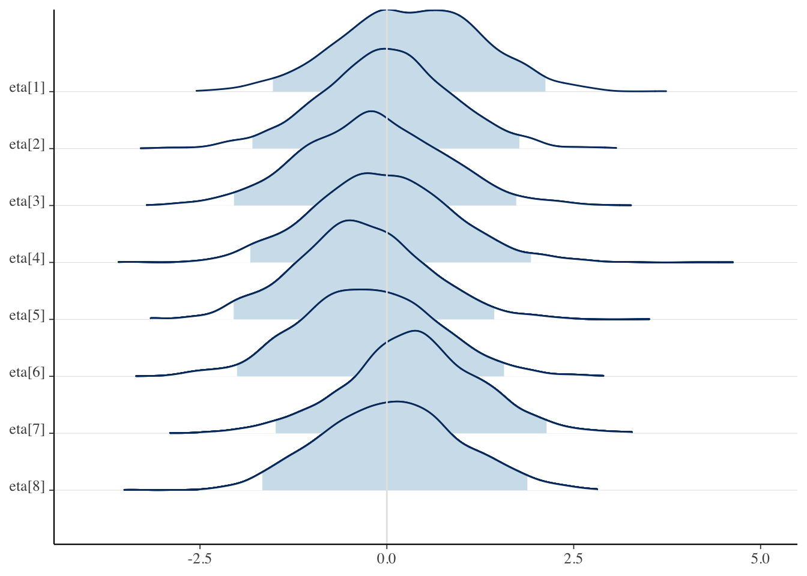
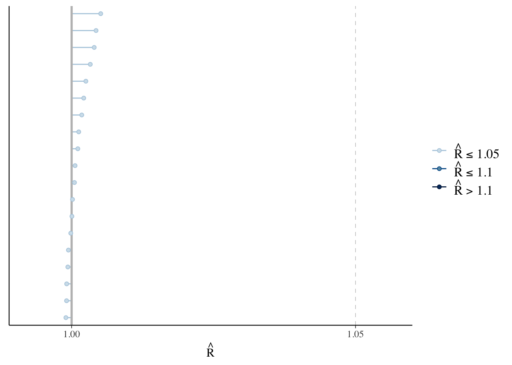
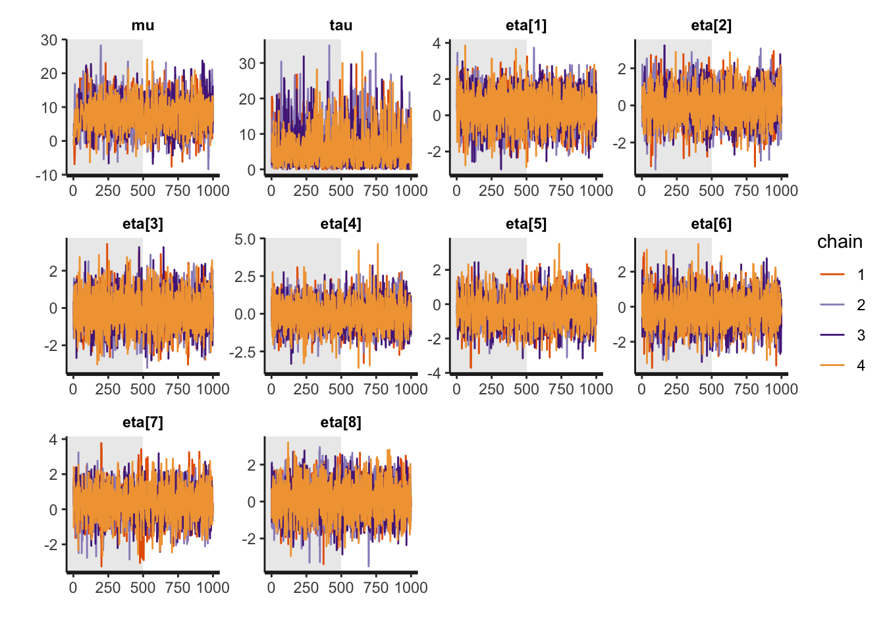
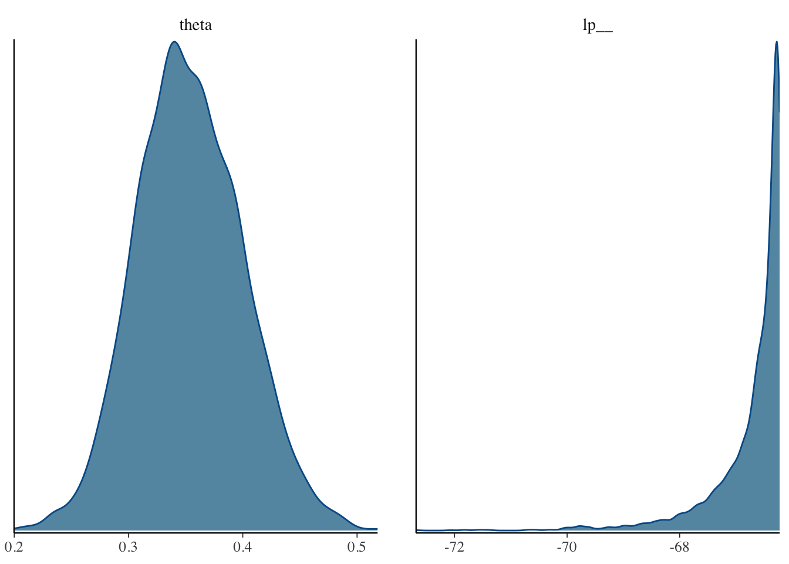

1 + 3## [1] 43 - 5## [1] -25 * 7## [1] 358 / 2## [1] 4sqrt(4)## [1] 2help(sqrt)obj <- 2
obj## [1] 2obj2 <- 2
obj3 <- 3
obj2 + obj3## [1] 5obj <- 1:10
obj## [1] 1 2 3 4 5 6 7 8 9 10obj * 2## [1] 2 4 6 8 10 12 14 16 18 20obj <- matrix(c(1:10), nrow = 5)
obj## [,1] [,2]
## [1,] 1 6
## [2,] 2 7
## [3,] 3 8
## [4,] 4 9
## [5,] 5 10obj * 2## [,1] [,2]
## [1,] 2 12
## [2,] 4 14
## [3,] 6 16
## [4,] 8 18
## [5,] 10 20obj[1, ]## [1] 1 6obj[, 2]## [1] 6 7 8 9 10obj <- list(
name = c("kosugi", "tanaka", "suzuki"),
gender = c("male", "female", "male"),
height = c(170, 160),
weight = c(70.6, 80.9, 90.6, 40.3)
)
obj## $name
## [1] "kosugi" "tanaka" "suzuki"
##
## $gender
## [1] "male" "female" "male"
##
## $height
## [1] 170 160
##
## $weight
## [1] 70.6 80.9 90.6 40.3obj$name## [1] "kosugi" "tanaka" "suzuki"str(obj)## List of 4
## $ name : chr [1:3] "kosugi" "tanaka" "suzuki"
## $ gender: chr [1:3] "male" "female" "male"
## $ height: num [1:2] 170 160
## $ weight: num [1:4] 70.6 80.9 90.6 40.3obj$gender <- as.factor(obj$gender)
str(obj)## List of 4
## $ name : chr [1:3] "kosugi" "tanaka" "suzuki"
## $ gender: Factor w/ 2 levels "female","male": 2 1 2
## $ height: num [1:2] 170 160
## $ weight: num [1:4] 70.6 80.9 90.6 40.3obj <- data.frame(
list(
name = c("kosugi", "tanaka", "suzuki"),
gender = c(1, 2, 1),
hight = c(170, 160, 170),
weight = c(70.6, 80.9, 90.6)
)
)str(obj)## 'data.frame': 3 obs. of 4 variables:
## $ name : chr "kosugi" "tanaka" "suzuki"
## $ gender: num 1 2 1
## $ hight : num 170 160 170
## $ weight: num 70.6 80.9 90.6obj$gender <- factor(obj$gender, labels = c("male", "female"))
obj| name | gender | hight | weight |
|---|---|---|---|
| kosugi | male | 170 | 70.6 |
| tanaka | female | 160 | 80.9 |
| suzuki | male | 170 | 90.6 |
library(rstan)## Loading required package: StanHeaders## Loading required package: ggplot2## rstan (Version 2.21.2, GitRev: 2e1f913d3ca3)## For execution on a local, multicore CPU with excess RAM we recommend calling
## options(mc.cores = parallel::detectCores()).
## To avoid recompilation of unchanged Stan programs, we recommend calling
## rstan_options(auto_write = TRUE)rstan_options(auto_write = TRUE)
options(mc.cores = parallel::detectCores())
stancode <- "
data {
int<lower=0> J; // number of schools
real y[J]; // estimated treatment effects
real<lower=0> sigma[J]; // s.e. of effect estimates
}
parameters {
real mu;
real<lower=0> tau;
real eta[J];
}
transformed parameters {
real theta[J];
for (j in 1:J)
theta[j] = mu + tau * eta[j];
}
model {
target += normal_lpdf(eta | 0, 1);
target += normal_lpdf(y | theta, sigma);
}
"
schools_dat <- list(
J = 8, y = c(28, 8, -3, 7, -1, 1, 18, 12),
sigma = c(15, 10, 16, 11, 9, 11, 10, 18)
)
model.ex <- stan_model(model_code = stancode, model_name = "school")
fit.ML <- optimizing(model.ex, data = schools_dat)
fit.samp <- sampling(model.ex,
data = schools_dat, iter = 1000,
chains = 4
)
fit.vb <- vb(model.ex, data = schools_dat)## Chain 1: ------------------------------------------------------------
## Chain 1: EXPERIMENTAL ALGORITHM:
## Chain 1: This procedure has not been thoroughly tested and may be unstable
## Chain 1: or buggy. The interface is subject to change.
## Chain 1: ------------------------------------------------------------
## Chain 1:
## Chain 1:
## Chain 1:
## Chain 1: Gradient evaluation took 2.2e-05 seconds
## Chain 1: 1000 transitions using 10 leapfrog steps per transition would take 0.22 seconds.
## Chain 1: Adjust your expectations accordingly!
## Chain 1:
## Chain 1:
## Chain 1: Begin eta adaptation.
## Chain 1: Iteration: 1 / 250 [ 0%] (Adaptation)
## Chain 1: Iteration: 50 / 250 [ 20%] (Adaptation)
## Chain 1: Iteration: 100 / 250 [ 40%] (Adaptation)
## Chain 1: Iteration: 150 / 250 [ 60%] (Adaptation)
## Chain 1: Iteration: 200 / 250 [ 80%] (Adaptation)
## Chain 1: Success! Found best value [eta = 1] earlier than expected.
## Chain 1:
## Chain 1: Begin stochastic gradient ascent.
## Chain 1: iter ELBO delta_ELBO_mean delta_ELBO_med notes
## Chain 1: 100 -25.581 1.000 1.000
## Chain 1: 200 -25.756 0.503 1.000
## Chain 1: 300 -26.476 0.345 0.027
## Chain 1: 400 -25.707 0.266 0.030
## Chain 1: 500 -26.123 0.216 0.027
## Chain 1: 600 -25.510 0.184 0.027
## Chain 1: 700 -25.643 0.158 0.024
## Chain 1: 800 -26.031 0.140 0.024
## Chain 1: 900 -25.685 0.126 0.016
## Chain 1: 1000 -26.637 0.117 0.024
## Chain 1: 1100 -26.456 0.018 0.016
## Chain 1: 1200 -25.415 0.021 0.024
## Chain 1: 1300 -26.074 0.021 0.024
## Chain 1: 1400 -26.335 0.019 0.016
## Chain 1: 1500 -25.383 0.021 0.024
## Chain 1: 1600 -26.309 0.023 0.025
## Chain 1: 1700 -25.701 0.024 0.025
## Chain 1: 1800 -25.210 0.025 0.025
## Chain 1: 1900 -25.454 0.024 0.025
## Chain 1: 2000 -26.244 0.024 0.025
## Chain 1: 2100 -25.777 0.025 0.025
## Chain 1: 2200 -25.748 0.021 0.024
## Chain 1: 2300 -25.794 0.019 0.019
## Chain 1: 2400 -25.594 0.018 0.019
## Chain 1: 2500 -25.767 0.015 0.018
## Chain 1: 2600 -25.469 0.013 0.012
## Chain 1: 2700 -25.460 0.011 0.010 MEDIAN ELBO CONVERGED
## Chain 1:
## Chain 1: Drawing a sample of size 1000 from the approximate posterior...
## Chain 1: COMPLETED.fit.ML## $par
## mu tau eta[1] eta[2] eta[3]
## 8.356430e+00 9.772723e+03 2.009936e-03 -3.643953e-05 -1.162004e-03
## eta[4] eta[5] eta[6] eta[7] eta[8]
## -1.387875e-04 -9.574354e-04 -7.526838e-04 9.867454e-04 3.728023e-04
## theta[1] theta[2] theta[3] theta[4] theta[5]
## 2.799898e+01 8.000316e+00 -2.999514e+00 7.000098e+00 -1.000321e+00
## theta[6] theta[7] theta[8]
## 1.000660e+00 1.799962e+01 1.199972e+01
##
## $value
## [1] -34.67222
##
## $return_code
## [1] 0
##
## $theta_tilde
## mu tau eta[1] eta[2] eta[3] eta[4]
## [1,] 8.35643 9772.723 0.002009936 -3.643953e-05 -0.001162004 -0.0001387875
## eta[5] eta[6] eta[7] eta[8] theta[1] theta[2]
## [1,] -0.0009574354 -0.0007526838 0.0009867454 0.0003728023 27.99898 8.000316
## theta[3] theta[4] theta[5] theta[6] theta[7] theta[8]
## [1,] -2.999514 7.000098 -1.000321 1.00066 17.99962 11.99972fit.samp## Inference for Stan model: school.
## 4 chains, each with iter=1000; warmup=500; thin=1;
## post-warmup draws per chain=500, total post-warmup draws=2000.
##
## mean se_mean sd 2.5% 25% 50% 75% 97.5% n_eff Rhat
## mu 7.97 0.18 4.87 -1.07 4.70 7.80 10.95 18.19 750 1.01
## tau 6.22 0.19 5.19 0.23 2.31 5.14 8.75 20.02 747 1.00
## eta[1] 0.34 0.02 0.94 -1.52 -0.30 0.35 0.98 2.12 1889 1.00
## eta[2] -0.01 0.02 0.88 -1.80 -0.57 -0.01 0.55 1.77 1840 1.00
## eta[3] -0.19 0.02 0.94 -2.05 -0.83 -0.19 0.43 1.73 1835 1.00
## eta[4] -0.06 0.02 0.94 -1.83 -0.68 -0.09 0.54 1.93 1689 1.00
## eta[5] -0.36 0.02 0.88 -2.05 -0.92 -0.37 0.20 1.44 1436 1.00
## eta[6] -0.25 0.02 0.92 -2.00 -0.87 -0.26 0.36 1.57 1885 1.00
## eta[7] 0.35 0.02 0.90 -1.49 -0.20 0.35 0.92 2.14 1488 1.00
## eta[8] 0.05 0.02 0.92 -1.67 -0.59 0.05 0.65 1.88 1821 1.00
## theta[1] 10.95 0.22 8.16 -2.19 5.70 9.69 14.84 30.16 1354 1.00
## theta[2] 7.74 0.17 6.31 -5.47 4.01 7.71 11.42 20.55 1340 1.00
## theta[3] 6.42 0.20 7.63 -11.32 2.55 6.85 10.83 20.78 1439 1.00
## theta[4] 7.53 0.16 6.49 -5.49 3.60 7.51 11.65 20.60 1729 1.00
## theta[5] 5.15 0.16 6.19 -8.99 1.63 5.76 9.27 16.38 1450 1.00
## theta[6] 5.99 0.15 6.57 -8.69 2.31 6.42 10.27 18.09 1988 1.00
## theta[7] 10.49 0.16 6.51 -0.93 6.16 9.78 14.15 25.45 1572 1.00
## theta[8] 8.35 0.20 7.66 -6.30 3.88 7.95 12.26 25.76 1541 1.00
## lp__ -39.70 0.10 2.72 -45.72 -41.15 -39.39 -37.84 -35.38 688 1.00
##
## Samples were drawn using NUTS(diag_e) at Sat Feb 20 11:37:44 2021.
## For each parameter, n_eff is a crude measure of effective sample size,
## and Rhat is the potential scale reduction factor on split chains (at
## convergence, Rhat=1).fit.vb## Inference for Stan model: school.
## 1 chains, each with iter=1000; warmup=0; thin=1;
## post-warmup draws per chain=1000, total post-warmup draws=1000.
##
## mean se_mean sd 2.5% 25% 50% 75% 97.5% n_eff khat
## mu 7.64 NaN 4.78 -1.33 4.33 7.38 10.89 16.93 NaN 0.56
## tau 4.17 NaN 3.48 0.79 2.05 3.17 5.12 13.28 NaN 0.64
## eta[1] 0.29 NaN 0.96 -1.52 -0.39 0.29 0.96 2.14 NaN 0.45
## eta[2] -0.02 NaN 0.88 -1.74 -0.64 -0.01 0.57 1.62 NaN 0.41
## eta[3] -0.20 NaN 1.02 -2.19 -0.90 -0.19 0.47 1.75 NaN 0.60
## eta[4] 0.07 NaN 0.91 -1.62 -0.54 0.05 0.69 1.90 NaN 0.46
## eta[5] -0.35 NaN 0.87 -1.96 -0.97 -0.35 0.25 1.30 NaN 0.41
## eta[6] -0.18 NaN 0.90 -1.97 -0.78 -0.14 0.43 1.47 NaN 0.45
## eta[7] 0.46 NaN 0.95 -1.25 -0.23 0.47 1.08 2.45 NaN 0.42
## eta[8] -0.06 NaN 1.11 -2.20 -0.79 -0.06 0.68 2.07 NaN 0.54
## theta[1] 8.91 NaN 6.89 -3.75 4.55 8.52 13.02 23.61 NaN 0.47
## theta[2] 7.64 NaN 6.41 -5.38 3.54 7.54 11.80 19.43 NaN 0.58
## theta[3] 6.94 NaN 7.33 -7.65 2.61 6.88 11.57 20.72 NaN 0.43
## theta[4] 7.90 NaN 6.96 -4.91 3.77 7.87 11.80 21.59 NaN 0.44
## theta[5] 6.19 NaN 6.85 -7.17 2.41 6.31 10.48 18.33 NaN 0.50
## theta[6] 6.84 NaN 6.90 -6.24 2.95 7.03 11.03 18.71 NaN 0.62
## theta[7] 9.79 NaN 7.86 -3.22 5.22 9.21 13.63 26.61 NaN 0.67
## theta[8] 7.38 NaN 7.80 -8.38 2.72 7.60 12.24 21.89 NaN 0.66
## lp__ 0.00 NaN 0.00 0.00 0.00 0.00 0.00 0.00 NaN 0.51
##
## Approximate samples were drawn using VB(meanfield) at Sat Feb 20 11:37:44 2021.## We recommend genuine 'sampling' from the posterior distribution for final inferences!plot(fit.samp)## 'pars' not specified. Showing first 10 parameters by default.## ci_level: 0.8 (80% intervals)## outer_level: 0.95 (95% intervals)
plot(fit.samp, show_density = TRUE)## 'pars' not specified. Showing first 10 parameters by default.## ci_level: 0.8 (80% intervals)## outer_level: 0.95 (95% intervals)
library(bayesplot)## This is bayesplot version 1.8.0## - Online documentation and vignettes at mc-stan.org/bayesplot## - bayesplot theme set to bayesplot::theme_default()## * Does _not_ affect other ggplot2 plots## * See ?bayesplot_theme_set for details on theme settingmcmc_areas(fit.samp)
mcmc_combo(fit.samp, pars = "mu")
mcmc_dens(fit.samp, pars = "mu")
mcmc_dens_chains(fit.samp, pars = "mu")
mcmc_areas_ridges(fit.samp, regex_pars = "^eta\\[", prob = 0.95, prob_outer = 1)
rhat(fit.samp)## mu tau eta[1] eta[2] eta[3] eta[4] eta[5] eta[6]
## 1.0051228 1.0043029 0.9998513 0.9993338 0.9989901 0.9991089 0.9991303 1.0012510
## eta[7] eta[8] theta[1] theta[2] theta[3] theta[4] theta[5] theta[6]
## 1.0010921 1.0001541 1.0006064 1.0000514 1.0025081 1.0004954 1.0017842 0.9994371
## theta[7] theta[8] lp__
## 1.0032853 1.0021338 1.0039774mcmc_rhat(rhat(fit.samp))
traceplot(fit.samp, inc_warmup = T)## 'pars' not specified. Showing first 10 parameters by default.
library(bayestestR)## Note: The default CI width (currently `ci=0.89`) might change in future versions (see https://github.com/easystats/bayestestR/discussions/250). To prevent any issues, please set it explicitly when using bayestestR functions, via the 'ci' argument.hdi(fit.samp, ci = 0.90)| Parameter | CI | CI_low | CI_high | Effects | Component | |
|---|---|---|---|---|---|---|
| 9 | mu | 0.9 | -0.7772831 | 15.247022 | fixed | conditional |
| 10 | tau | 0.9 | 0.0044565 | 12.903652 | fixed | conditional |
| 1 | eta[1] | 0.9 | -1.1954184 | 1.845335 | fixed | conditional |
| 2 | eta[2] | 0.9 | -1.3537325 | 1.544777 | fixed | conditional |
| 3 | eta[3] | 0.9 | -1.7772894 | 1.306023 | fixed | conditional |
| 4 | eta[4] | 0.9 | -1.5300320 | 1.541219 | fixed | conditional |
| 5 | eta[5] | 0.9 | -1.7963951 | 1.122480 | fixed | conditional |
| 6 | eta[6] | 0.9 | -1.7321989 | 1.194652 | fixed | conditional |
| 7 | eta[7] | 0.9 | -1.1948004 | 1.797640 | fixed | conditional |
| 8 | eta[8] | 0.9 | -1.4224309 | 1.586941 | fixed | conditional |
| 11 | theta[1] | 0.9 | -2.9027497 | 23.497935 | fixed | conditional |
| 12 | theta[2] | 0.9 | -2.6355982 | 17.587995 | fixed | conditional |
| 13 | theta[3] | 0.9 | -4.4791850 | 19.874373 | fixed | conditional |
| 14 | theta[4] | 0.9 | -3.1722230 | 18.257040 | fixed | conditional |
| 15 | theta[5] | 0.9 | -4.6257692 | 15.139447 | fixed | conditional |
| 16 | theta[6] | 0.9 | -4.9010900 | 16.663366 | fixed | conditional |
| 17 | theta[7] | 0.9 | 0.3194331 | 21.707026 | fixed | conditional |
| 18 | theta[8] | 0.9 | -4.6643404 | 20.100171 | fixed | conditional |
map_estimate(fit.samp)| Parameter | MAP_Estimate |
|---|---|
| mu | 8.4391512 |
| tau | 0.7827862 |
| eta[1] | 0.0203186 |
| eta[2] | -0.0038834 |
| eta[3] | -0.2043186 |
| eta[4] | -0.2150769 |
| eta[5] | -0.4789859 |
| eta[6] | -0.3475387 |
| eta[7] | 0.3731896 |
| eta[8] | 0.1235993 |
| theta[1] | 8.3118545 |
| theta[2] | 7.5837565 |
| theta[3] | 6.8392690 |
| theta[4] | 7.2794067 |
| theta[5] | 6.5722939 |
| theta[6] | 7.2025967 |
| theta[7] | 9.0673084 |
| theta[8] | 7.3244116 |
→資料
set.seed(12345)
N <- 100
theta <- 0.3
X <- rbinom(N, 1, theta)
X## [1] 1 1 1 1 0 0 0 0 1 1 0 0 1 0 0 0 0 0 0 1 0 0 1 1 0 0 0 0 0 0 1 0 0 0 0 0 1
## [38] 1 0 0 1 0 1 1 0 0 0 0 0 0 1 1 0 0 1 0 1 0 0 0 1 0 1 1 1 0 1 0 0 1 0 0 0 0
## [75] 0 0 1 0 0 0 1 0 0 0 0 0 1 0 1 0 1 1 0 0 1 0 1 1 0 0mean(X)## [1] 0.35## data{
## int N;
## int Y[N];
## }
##
## parameters{
## real<lower=0,upper=1> theta;
## }
##
## model{
## for(n in 1:N){
## Y[n] ~ bernoulli(theta);
## }
## }# コンパイル
model.bern <- stan_model("bernoulli.stan", model_name = "sample1")
# データの準備
dataSet <- list(N = N, Y = X)
# サンプリング
fit <- sampling(model.bern, dataSet)
# 結果表示
fit## Inference for Stan model: bernoulli.
## 4 chains, each with iter=2000; warmup=1000; thin=1;
## post-warmup draws per chain=1000, total post-warmup draws=4000.
##
## mean se_mean sd 2.5% 25% 50% 75% 97.5% n_eff Rhat
## theta 0.35 0.00 0.05 0.27 0.32 0.35 0.39 0.45 1376 1
## lp__ -66.71 0.02 0.69 -68.67 -66.86 -66.45 -66.27 -66.22 1572 1
##
## Samples were drawn using NUTS(diag_e) at Sat Feb 20 11:37:59 2021.
## For each parameter, n_eff is a crude measure of effective sample size,
## and Rhat is the potential scale reduction factor on split chains (at
## convergence, Rhat=1).map_estimate(fit)| Parameter | MAP_Estimate |
|---|---|
| theta | 0.3410187 |
hdi(fit, ci = 0.9)| Parameter | CI | CI_low | CI_high | Effects | Component |
|---|---|---|---|---|---|
| theta | 0.9 | 0.2801652 | 0.4302667 | fixed | conditional |
# 可視化
mcmc_dens(fit)
fit <- sampling(model.bern, dataSet, iter = 50000, chains = 3)
fit## Inference for Stan model: bernoulli.
## 3 chains, each with iter=50000; warmup=25000; thin=1;
## post-warmup draws per chain=25000, total post-warmup draws=75000.
##
## mean se_mean sd 2.5% 25% 50% 75% 97.5% n_eff Rhat
## theta 0.35 0 0.05 0.26 0.32 0.35 0.38 0.45 25242 1
## lp__ -66.73 0 0.71 -68.74 -66.89 -66.45 -66.27 -66.22 35455 1
##
## Samples were drawn using NUTS(diag_e) at Sat Feb 20 11:38:02 2021.
## For each parameter, n_eff is a crude measure of effective sample size,
## and Rhat is the potential scale reduction factor on split chains (at
## convergence, Rhat=1).map_estimate(fit)| Parameter | MAP_Estimate |
|---|---|
| theta | 0.3465957 |
set.seed(12345)
N <- 10
theta <- 0.3
X <- rbinom(N, 1, theta)
X## [1] 1 1 1 1 0 0 0 0 1 1mean(X)## [1] 0.6dataSet <- list(N = N, Y = X)
fit <- sampling(model.bern, dataSet, iter = 50000, chains = 3)
fit## Inference for Stan model: bernoulli.
## 3 chains, each with iter=50000; warmup=25000; thin=1;
## post-warmup draws per chain=25000, total post-warmup draws=75000.
##
## mean se_mean sd 2.5% 25% 50% 75% 97.5% n_eff Rhat
## theta 0.58 0 0.14 0.31 0.49 0.59 0.68 0.83 28117 1
## lp__ -8.67 0 0.74 -10.76 -8.84 -8.39 -8.20 -8.15 27220 1
##
## Samples were drawn using NUTS(diag_e) at Sat Feb 20 11:38:04 2021.
## For each parameter, n_eff is a crude measure of effective sample size,
## and Rhat is the potential scale reduction factor on split chains (at
## convergence, Rhat=1).map_estimate(fit)| Parameter | MAP_Estimate |
|---|---|
| theta | 0.587151 |
hdi(fit)| Parameter | CI | CI_low | CI_high | Effects | Component |
|---|---|---|---|---|---|
| theta | 0.89 | 0.3625532 | 0.7990425 | fixed | conditional |